Each works differently. Each starts from a copy of your Hours data and keeps its own.
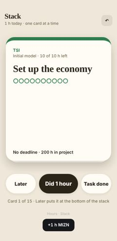
01 · StackOne task card at a time from a shuffled deck: did an hour, later, or done.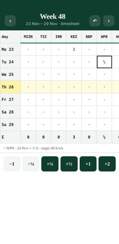
02 · LedgerA timesheet: days by projects, tap a cell and add hours with a keypad.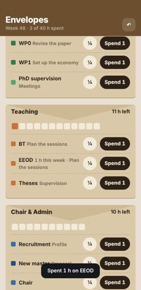
03 · EnvelopesEach category is an envelope of weekly hours; spend them on projects.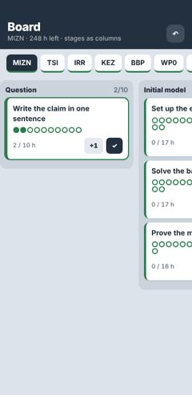
04 · BoardKanban: a project's stages as columns, task cards with dots.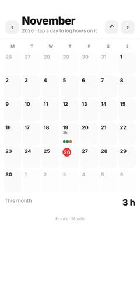
05 · MonthA month calendar with dots per day; tap a day to log on it.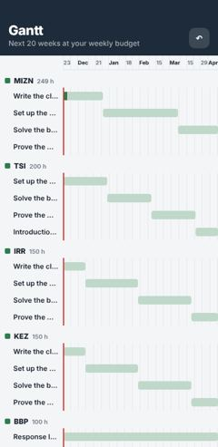
06 · GanttTask bars over 20 weeks at your budget, with ▲ deadlines that turn red when missed.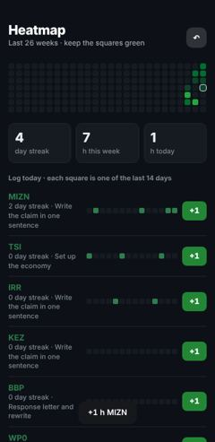
07 · HeatmapContribution grid of 26 weeks, streaks per project, +1 to keep it green.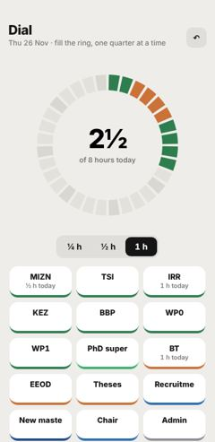
08 · DialFill today's 8-hour ring in quarters, coloured by project.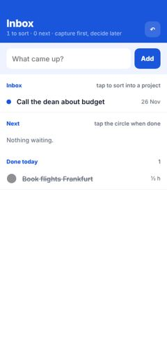
09 · InboxCapture anything, sort it into a project and size later, tick it when done.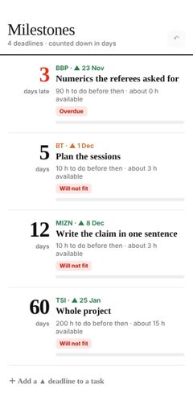
10 · MilestonesAll ▲ deadlines as a countdown, with on track, tight or will-not-fit.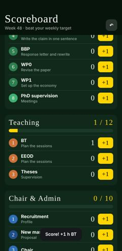
11 · ScoreboardWeekly target as a match: categories as teams, win or lose each week.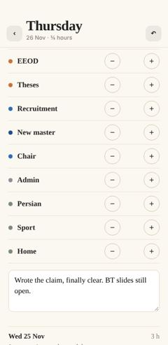
12 · JournalEnd-of-day review: what did you work on, plus a line about the day.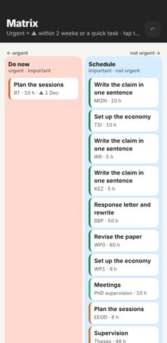
13 · MatrixUrgent / important 2×2 with every current task and quick task.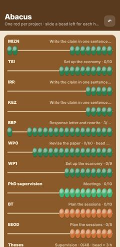
14 · AbacusEach project a rod; slide a bead left for every hour of the current task.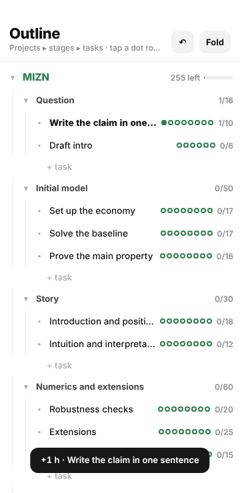
15 · OutlineFolding tree of projects, stages and tasks; add tasks inline.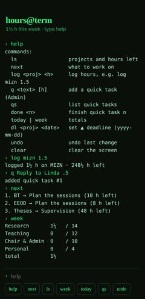
16 · TerminalCommand line: log mizn 1.5, next, week, q Reply to Linda .5.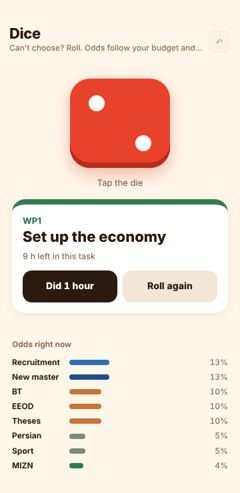
17 · DiceCan't choose? Roll; odds follow budget and deadlines.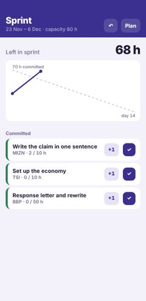
18 · SprintCommit tasks to a 2-week sprint and watch the burndown.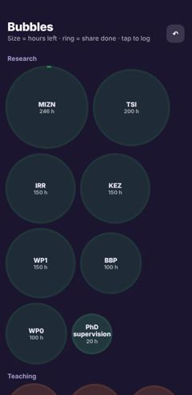
19 · BubblesProjects as bubbles sized by hours left; watch them shrink.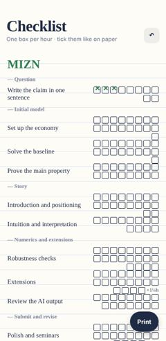
20 · ChecklistPaper checklist with one box per hour; printable.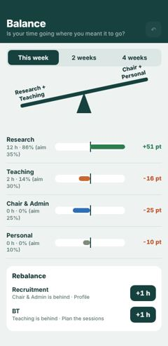
21 · BalanceActual vs intended share per category on a seesaw, with rebalance tips.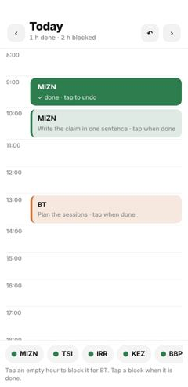
22 · TimeblockBlock today's hours 8:00–19:00 per project; tap a block when done.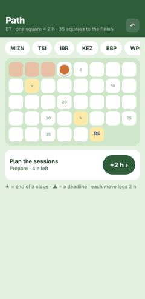
23 · PathA board-game path per project; each move logs hours toward the flag.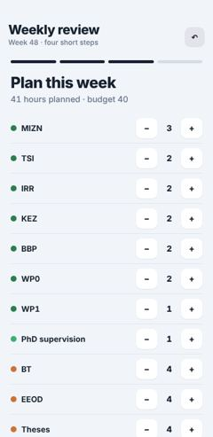
24 · Weekly reviewFour steps: last week, due soon, plan this week, your week.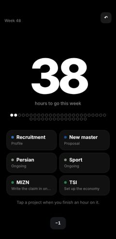
25 · One numberJust the hours left this week, and six buttons.